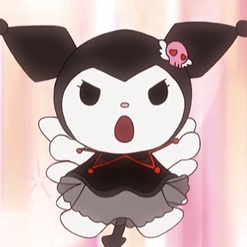
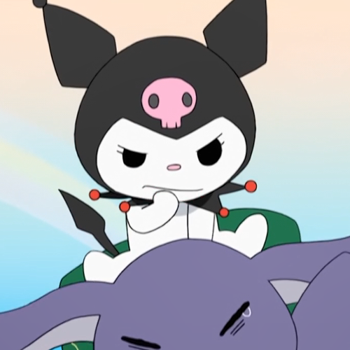

Birthday: October 31st
Kuromi (she/her)



Meet Kuromi! Debuting in 2005, Kuromi is one of the main antagonists in Onegai My Melody. She is an escaped prisoner of Mari Land and later is the leader of a biker gang called Kuromi's 5. Kuromi dreams of becoming a rock star and dislikes My Melody, who is her rival in the series. She loves romance novels. to write in her diary, cause mischief, and read
Gender: Female
Species: Rabbit
Pumpkins
becoming a rock star!
Debut: 2005
Favorite food: Shallots and
Career: None
S/O: None
Fun fact: Kuromi dreams of